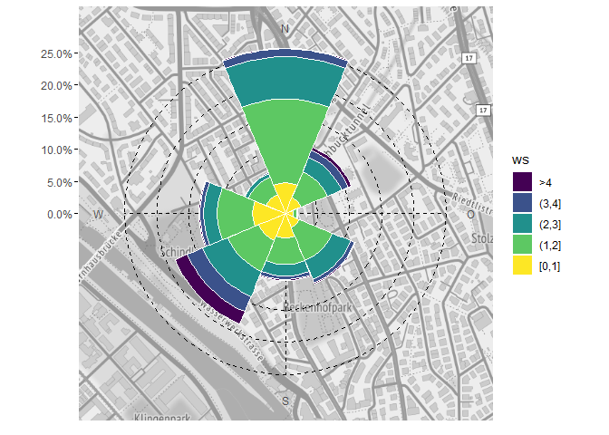
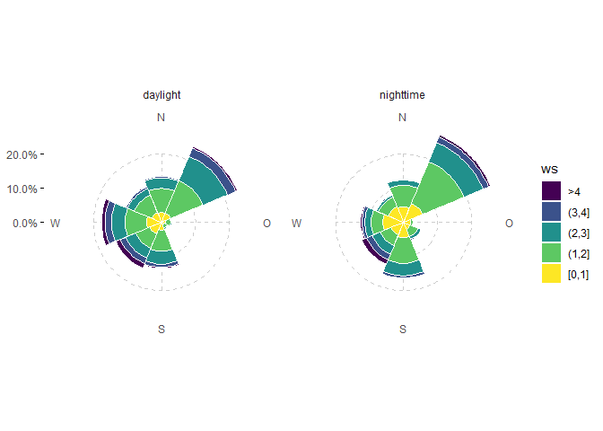
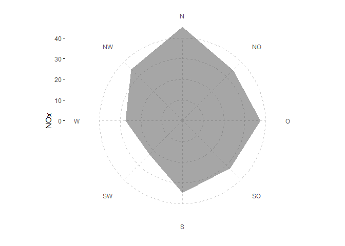
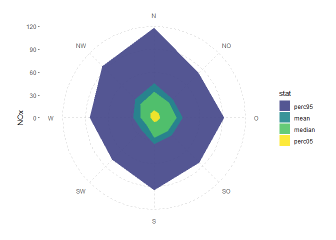
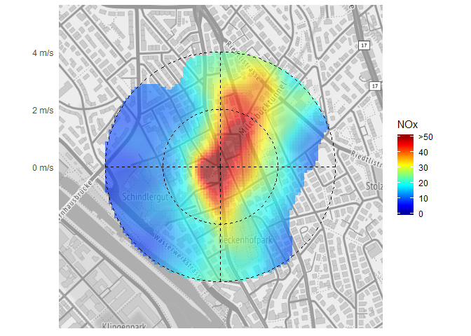

Erstellen von Diagrammen für Ostluft Auswertungen und Berichte mit Bezug zu Luftschadstoffen und Meteorologie. Einige Funktionen sind aus dem package openair abgeleitet. Alle plot-Funktionen sind grundsätzlich auf das ggplot2 package bezogen.
Installation
Der Quellcode von rOstluft.plot ist auf github gehosted. Die einfachste Variante ist die Installation mit Hilfe des Packages devtools:
Beispiele
library(ggplot2)
library(rOstluft.plot)
library(dplyr)
data <-
rOstluft::read_airmo_csv(system.file("extdata", "Zch_Stampfenbachstrasse_2010-2014.csv", package = "rOstluft.data", mustWork = TRUE)) %>%
rOstluft::rolf_to_openair() %>%
openair::cutData(date, type = "daylight") %>%
dplyr::mutate(year = lubridate::year(date))Windrose auf Karte
bbox <- tibble::tibble(x = c(2683141 - 500, 2683141 + 500), y = c(1249040 - 500, 1249040 + 500))
bbox <- rOstluft::transform_LV95_to_WSG84(bbox)
bbox <- c(left = bbox$lon[1], right = bbox$lon[2], bottom = bbox$lat[1], top = bbox$lat[2])
raster_map <- ggmap::get_stamenmap(bbox, zoom = 16, maptype = "terrain",
source = "stamen", color = "bw")
plot <- ggwindrose(data, aes(ws = ws, wd = wd), wd_binwidth = 22.5,
ws_binwidth = 0.5, ws_max = 2.5, bg = raster_map)
plot

Radar-chart Windstatistik
df <-
rOstluft::read_airmo_csv(system.file("extdata", "Zch_Stampfenbachstrasse_2010-2014.csv",package = "rOstluft.data", mustWork = TRUE)) %>%
rOstluft::rolf_to_openair() %>%
dplyr::mutate(wday = lubridate::wday(date, label = TRUE, week_start = 1))
ggradar(df, aes(wd = wd, ws = ws, z = NOx),
param_args = list(fill = "blue", color = "blue", alpha = 0.5)) + ylab("NOx")
df <- openair::cutData(df, date, type = "daylight") %>%
dplyr::select(wd, ws, NO, NOx, daylight) %>%
tidyr::gather(par, val, -wd, -ws, -daylight)
ggradar(df, aes(wd = wd, ws = ws, z = val, group = par, fill = par, color = par)) + ylab("mean") +
facet_wrap(daylight~.)
polarplot openair-style
fill_scale = scale_fill_gradientn(colours = alpha(matlab::jet.colors(100), 0.75), na.value = NA)
ggpolarplot(data, aes(wd = wd, ws = ws, z = NOx), bg = raster_map,
fill_scale = fill_scale, breaks = seq(0,10,2))
Kalender + stat_filter
Kalender der max Stundenwerte des Tages von Ozon
statstable <- tibble::tribble(
~parameter, ~statistic, ~from, ~to,
"O3", "mean", "input", "h1",
"O3", "max", "h1", "d1"
)
data_d1 <-
rOstluft::read_airmo_csv(system.file("extdata", "Zch_Stampfenbachstrasse_2010-2014.csv",package = "rOstluft.data", mustWork = TRUE)) %>%
rOstluft::calculate_statstable(statstable) %>%
purrr::pluck("d1") %>%
rOstluft::rolf_to_openair()
ggcalendar(data_d1, z = "O3_max_h1") +
scale_fill_viridis_c(direction = -1, option = "magma", na.value = NA) +
cal_month_border(color = "gray80") +
stat_filter(aes(filter = O3_max_h1 > 120), size = 0.75, color = "green", fill = NA, shape = 21) +
cal_label(aes(label = round(O3_max_h1,0)), fontface = "bold")